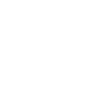

João Dias
Programador e estudante com interesse principalmente em front-end, porém, que se permite explorar também outras áreas da tecnologia da informação. Atualmente estudando ciência da computação na CESAR School

linguagens



Ferramentas